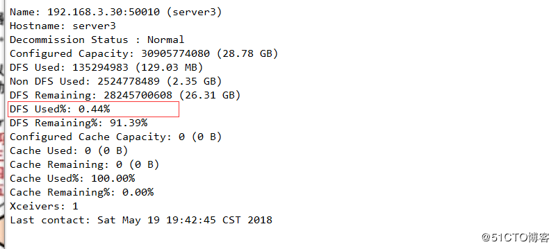
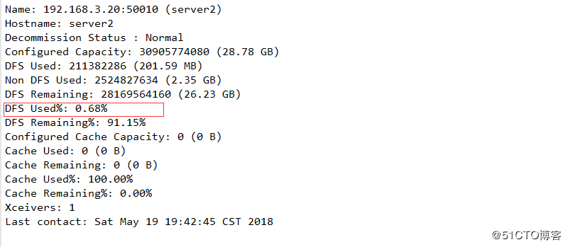
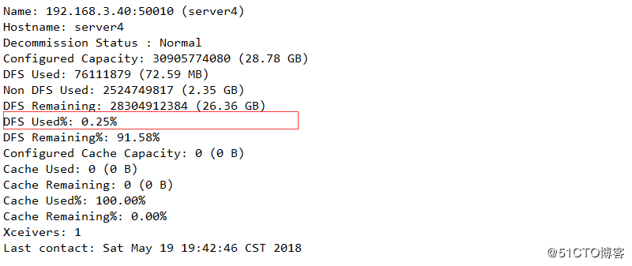
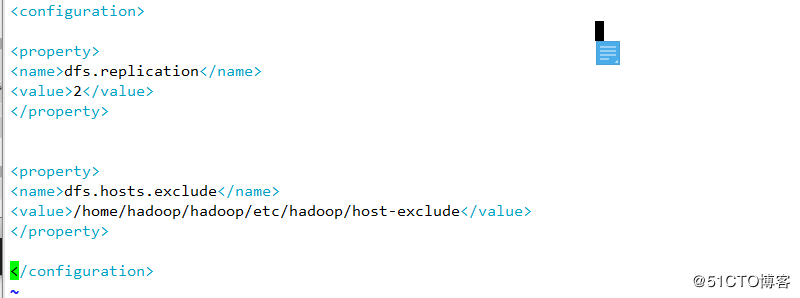
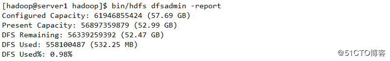
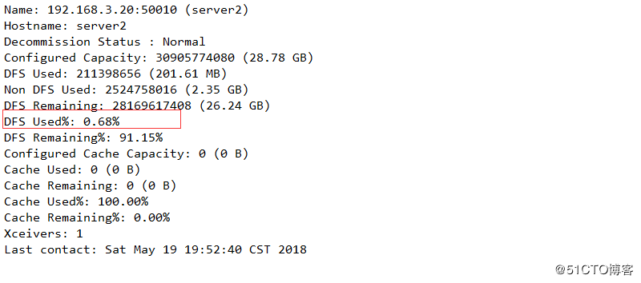
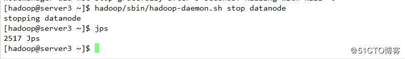
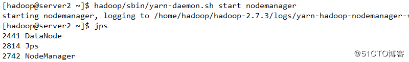

六 节点数据迁移
1 创建数据目录并上传数据

2 查看是否上传成功

3 查看其各个节点存储状态




4 配置下线
[hadoop@server1 hadoop]# vim etc/hadoop/hdfs.site.xml

配置下线用户为server3


5 生效配置文件

6 查看serever3状态，如果为normal 则表示迁移完成，否则未完成

7 查看其他节点存储，发现存储已经增加，则表明数据迁移完成



8 关闭datanode节点，下线成功

9 开启其他节点的nodemanager服务
